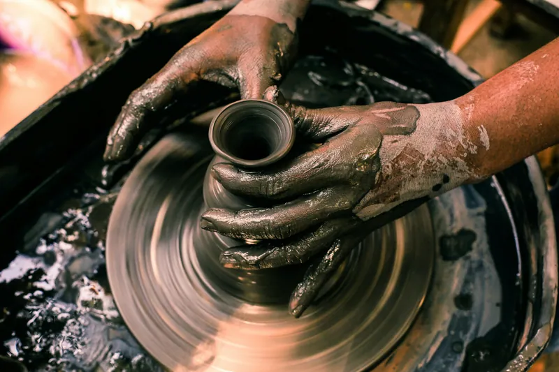
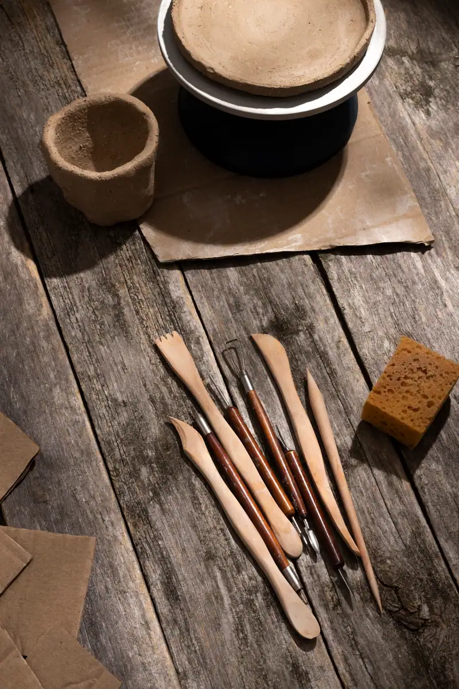

Tárgyak és műhelypillanatok
Műhely és kerámiák
A korong mellett minden tárgy apró mozdulatokból születik. Nézz körül a műhelyben: kész kerámiák és a készülésük pillanatai várnak.
Kerámiák, kézzel és figyelemmel
Kész használati tárgyak, formálódó edények és részletek az alkotás helyszínéről. A képek között a munkafolyamat is megjelenik; online vásárlásra nincs lehetőség.




Szentendrei műhely
Találkozzunk az agyag mellett!
2000 Szentendre, Agyagliget köz 4.
Csütörtök–vasárnap: 10:00–18:00
A foglalkozásokon előzetes egyeztetéssel vehetsz részt. Írj, ha a tanfolyamokról vagy a kerámiákról kérdeznél!
Jelentkezem